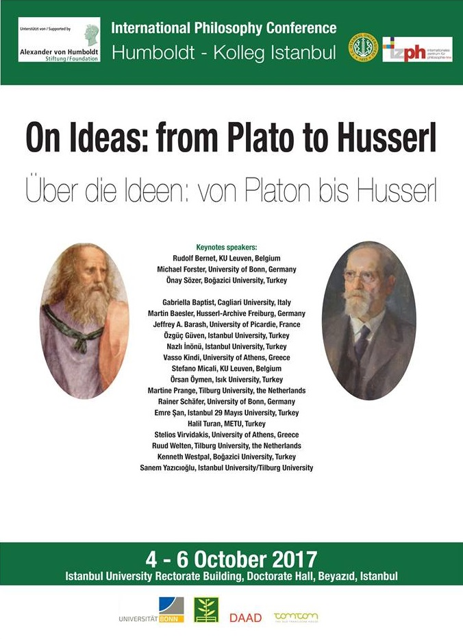

International Philsophy Conference
Humboldt-Kolleg Istanbul
On Ideas: from Plato to Husserl
Über die Ideen: von Platon bis Husserl
Conference Program
4 October 2017
9.45-10.15 Opening
Session I: / Moderator: Prof. Dr. Önay Sözer
10.15-11.15 Prof. Dr. Rudolf Bernet, KU Leuven, Belgium: “Husserl on How Imagination and Ideas Open New Possibilities”
11.15-12.15 Prof. Dr. Vasso Kindi, University of Athens, Greece: “Ideas as Exemplars/Paradigms”
12.15-12.30 Break
12.30-13.30 Prof. Dr. Halil Turan, METU, Ankara, Turkey: “The Existence of Other Egos, Empathy and Morality”
13.30-14.45 Lunch Break
Session II / Moderator: Assoc. Prof. Gabriella Baptist
15.00-16.00 Prof. Dr. Rainer Schäfer, University of Bonn, Germany: “Dialectics and Ontology - The Theory of Ideas in Plato’s Later Dialogues”
16.00-17.00 Assist. Prof. Emre Şan, Istanbul 29 Mayıs University, Turkey: “Negative Platonism and Phenomenology in the Thought of Patočka”
17.00-17.20 Coffee Break
17.20-18.20 Assoc. Prof. Sanem Yazıcıoğlu, Istanbul University/Tilburg University: “Husserl on Ideas and Personal Identity”
5 October 2017
Session III / Moderator: Prof. Dr. Jeffrey A. Barash
09.30-10.30 Prof. Dr. Kenneth R. Westphal, Boğaziçi University, Turkey: “Hegel’s Idea Here and Now: Harmonizing Causal Naturalism and Emanationism”
10.30-11.30 Assoc. Prof. Gabriella Baptist, Cagliari University, Italy: “Welche Idee für das Leben? Hegel und die Folgen”
11.30-12.00 Break
12.00-13.00 Prof. Dr. Önay Sözer, Boğaziçi University: “Identität der Idee im Prozess und das Problem des Scheins bei Hegel”
13.00-14.20 Lunch Break
Session IV / Moderator: Assoc. Prof. Nazlı İnonü
14.30-15.30 Prof. Dr. Jeffrey A. Barash, University of Picardie, France: “Ideas and the Symbolic Underpinnings of World-Configuration”
15.30-16.30 Dr. Martin Baesler, University of Freiburg, Germany: “The Role of Ideas in Kant’s State”
16.30-16.45 Break
16.45-17.45 Prof. Dr. Martine S. Prange, Tilburg University, the Netherlands: “The Lived Experience as a Source of Knowledge for Nietzsche”
17.45-18.30 Presentations of the Humboldt Foundation’s Programs
6 October 2017
Session V / Moderator: Prof. Dr. Türker Armaner
09.30-10.30 Prof. Dr. Stelios Virvidakis, University of Athens, Greece: “Ideas in Kant’s Critique of Pure Reason”
10.30-11.30 Assoc. Prof. Özgüç Güven, Istanbul University, Turkey: “Search for Objectivity: Transformation of Idea in Frege”
11.30-11.45 Break
11.45-12.45 Prof. Dr. Ruud B. J. M. Welten, Tilburg University, the Netherlands: “Ideas and Idols. On Levinas”
12.45-13.45 Lunch Break
Session VI / Moderator: Prof. Dr. Halil Turan & Assoc. Prof. Sanem Yazıcıoğlu
14.00-15.00 Assist. Prof. Stefano Micali, KU Leuven, Belgium: “Thinking in Anxiety”
15.00-16.00 Prof. Dr. Örsan Öymen, Isık University, Turkey: “Ideas and Belief in Sextus and Hume”
16.00-17.00 Assoc. Prof. Nazlı İnonü, Istanbul University, Turkey: “Charles Sanders Peirce on Ideas”
17.00-17.30 Break
17.30-18.30 Prof. Dr. Michael Forster, University of Bonn, Institute of Philosophy, Germany: “Hermeneutics and the Variability of the Concept of an Idea”
18.30-18.45 Closing Speeches (S. Yazıcıoğlu and M. Forster)
List of Participants
International Philsophy Conference
Humboldt-Kolleg Istanbul
On Ideas: from Plato to Husserl
Über die Ideen: von Platon bis Husserl
Conference Program
4 October 2017
9.45-10.15 Opening
Session I: / Moderator: Prof. Dr. Önay Sözer
10.15-11.15 Prof. Dr. Rudolf Bernet, KU Leuven, Belgium: “Husserl on How Imagination and Ideas Open New Possibilities”
11.15-12.15 Prof. Dr. Vasso Kindi, University of Athens, Greece: “Ideas as Exemplars/Paradigms”
12.15-12.30 Break
12.30-13.30 Prof. Dr. Halil Turan, METU, Ankara, Turkey: “The Existence of Other Egos, Empathy and Morality”
13.30-14.45 Lunch Break
Session II / Moderator: Assoc. Prof. Gabriella Baptist
15.00-16.00 Prof. Dr. Rainer Schäfer, University of Bonn, Germany: “Dialectics and Ontology - The Theory of Ideas in Plato’s Later Dialogues”
16.00-17.00 Assist. Prof. Emre Şan, Istanbul 29 Mayıs University, Turkey: “Negative Platonism and Phenomenology in the Thought of Patočka”
17.00-17.20 Coffee Break
17.20-18.20 Assoc. Prof. Sanem Yazıcıoğlu, Istanbul University/Tilburg University: “Husserl on Ideas and Personal Identity”
5 October 2017
Session III / Moderator: Prof. Dr. Jeffrey A. Barash
09.30-10.30 Prof. Dr. Kenneth R. Westphal, Boğaziçi University, Turkey: “Hegel’s Idea Here and Now: Harmonizing Causal Naturalism and Emanationism”
10.30-11.30 Assoc. Prof. Gabriella Baptist, Cagliari University, Italy: “Welche Idee für das Leben? Hegel und die Folgen”
11.30-12.00 Break
12.00-13.00 Prof. Dr. Önay Sözer, Boğaziçi University: “Identität der Idee im Prozess und das Problem des Scheins bei Hegel”
13.00-14.20 Lunch Break
Session IV / Moderator: Assoc. Prof. Nazlı İnonü
14.30-15.30 Prof. Dr. Jeffrey A. Barash, University of Picardie, France: “Ideas and the Symbolic Underpinnings of World-Configuration”
15.30-16.30 Dr. Martin Baesler, University of Freiburg, Germany: “The Role of Ideas in Kant’s State”
16.30-16.45 Break
16.45-17.45 Prof. Dr. Martine S. Prange, Tilburg University, the Netherlands: “The Lived Experience as a Source of Knowledge for Nietzsche”
17.45-18.30 Presentations of the Humboldt Foundation’s Programs
6 October 2017
Session V / Moderator: Prof. Dr. Türker Armaner
09.30-10.30 Prof. Dr. Stelios Virvidakis, University of Athens, Greece: “Ideas in Kant’s Critique of Pure Reason”
10.30-11.30 Assoc. Prof. Özgüç Güven, Istanbul University, Turkey: “Search for Objectivity: Transformation of Idea in Frege”
11.30-11.45 Break
11.45-12.45 Prof. Dr. Ruud B. J. M. Welten, Tilburg University, the Netherlands: “Ideas and Idols. On Levinas”
12.45-13.45 Lunch Break
Session VI / Moderator: Prof. Dr. Halil Turan & Assoc. Prof. Sanem Yazıcıoğlu
14.00-15.00 Assist. Prof. Stefano Micali, KU Leuven, Belgium: “Thinking in Anxiety”
15.00-16.00 Prof. Dr. Örsan Öymen, Isık University, Turkey: “Ideas and Belief in Sextus and Hume”
16.00-17.00 Assoc. Prof. Nazlı İnonü, Istanbul University, Turkey: “Charles Sanders Peirce on Ideas”
17.00-17.30 Break
17.30-18.30 Prof. Dr. Michael Forster, University of Bonn, Institute of Philosophy, Germany: “Hermeneutics and the Variability of the Concept of an Idea”
18.30-18.45 Closing Speeches (S. Yazıcıoğlu and M. Forster)
List of Participants
- Assoc. Prof. Gabriella Baptist, Cagliari University, Italy
- Dr. Martin Baesler, Husserl-Archive Freiburg, Germany
- Prof. Dr. Jeffrey A. Barash, University of Picardie, France
- Prof. Dr. Rudolf Bernet, KU Leuven, Belgium
- Prof. Dr. Michael Forster, University of Bonn, Germany
- Assoc. Prof. Özgüç Güven, Istanbul University, Turkey
- Assoc. Prof. Nazlı İnönü, Istanbul University, Turkey
- Prof. Dr. Vasso Kindi, University of Athens, Greece
- Assist. Prof. Stefano Micali, KU Leuven, Belgium
- Prof. Dr. Örsan Öymen, Isık University, Turkey
- Prof. Dr. Martine Prange, Tilburg University, the Netherlands
- Prof. Dr. Rainer Schäfer, University of Bonn, Germany
- Prof. Dr. Önay Sözer, Boğazici University, Turkey
- Assist. Prof. Emre Şan, Istanbul 29 Mayıs University, Turkey
- Prof. Dr. Halil Turan, METU, Turkey
- Prof. Dr. Stelios Virvidakis, University of Athens, Greece
- Prof. Dr. Ruud Welten, Tilburg University, the Netherlands
- Prof. Dr. Kenneth Westphal, Boğaziçi University, Turkey
- Assoc. Prof. Sanem Yazıcıoğlu, Istanbul University/Tilburg University
Language
English, German
Scientific Committee
Prof. Dr. Micheal Forster
Assoc. Prof. Sanem Yazıcıoğlu
Local Organizing Committee
Assoc. Prof. Sanem Yazıcıoğlu
Assist. Prof. Vedat Kamer
Dr. Seval Bulutoğlu
Dr. Didem Çoban
Student Assistant Necla Çelik
Student Assistant Çağla Özcan
Student Assistant Mustafa Avcı
Contact
Web: http://humboldt-kolleg.philosophy.istanbul
E-mail: felsefe@istanbul.edu.tr
Phone: +90-212-455-57-00 / 15806
Twitter: https://twitter.com/IUFelsefe
English, German
Scientific Committee
Prof. Dr. Micheal Forster
Assoc. Prof. Sanem Yazıcıoğlu
Local Organizing Committee
Assoc. Prof. Sanem Yazıcıoğlu
Assist. Prof. Vedat Kamer
Dr. Seval Bulutoğlu
Dr. Didem Çoban
Student Assistant Necla Çelik
Student Assistant Çağla Özcan
Student Assistant Mustafa Avcı
Contact
Web: http://humboldt-kolleg.philosophy.istanbul
E-mail: felsefe@istanbul.edu.tr
Phone: +90-212-455-57-00 / 15806
Twitter: https://twitter.com/IUFelsefe
| 26/09/2017 |
| 678 defa okundu |
|
|
|
|
|
|